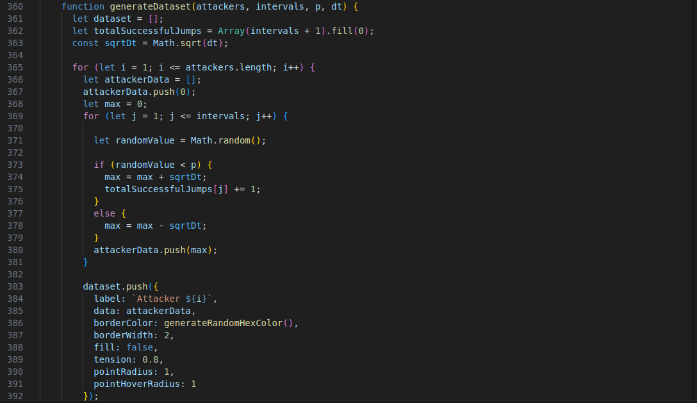

Homework 4
Theory
Statistical Independence
The concept of statistical independence is fundamental in probability and statistics and describes the relationship between two events (or variables) where the occurrence of one event does not influence the occurrence of the other.
Definition of Statistical Independence
Two events, \(A\) and \(B\), are defined as independent if the occurrence of one does not affect the occurrence of the other. Formally, we can express this independence through probabilities. Specifically, \(A\) and \(B\) are independent if and only if: \[P(A \cap B) = P(A) \cdot P(B)\] where:- \(P(A \cap B)\) is the probability that both events \(A\) and \(B\) occur simultaneously.
- \(P(A)\) and \(P(B)\) are the probabilities of events \(A\) and \(B\) occurring individually.
Intuition Behind the Formula
The formula \(P(A \cap B) = P(A) \cdot P(B)\) essentially states that, if \(A\) and \(B\) are independent, the probability of both events occurring together is simply the product of their individual probabilities. This means that knowing one event has occurred does not provide any information about the probability of the other. For instance:- Imagine flipping two separate coins. Let \(A\) be the event “the first coin lands on heads,” and \(B\) be the event “the second coin lands on heads.”
- The probability of \(A\) occurring (the first coin landing on heads) is \(P(A) = 0.5\).
- Similarly, \(P(B) = 0.5\).
Independence and Conditional Probability
An alternative way to define independence is by using conditional probability. The conditional probability of \(A\) given \(B\), denoted \(P(A | B)\), is the probability of \(A\) occurring if we know \(B\) has occurred. For \(A\) and \(B\) to be independent, the occurrence of \(B\) should not affect the probability of \(A\). Hence, if \(A\) and \(B\) are independent: \[P(A | B) = P(A)\] This means that knowing \(B\) has occurred does not change the probability of \(A\) occurring, reinforcing that \(A\) and \(B\) are statistically independent.Comparison to Dependent Events
In contrast, when two events are dependent, the occurrence of one affects the probability of the other. For dependent events \(C\) and \(D\), we would observe that \(P(C \cap D) \neq P(C) \cdot P(D)\), and consequently, \(P(C | D) \neq P(C)\).Practical
Stochastic Differential Equation simulator refinement
Refine your stochastic SDE simulator to generate a continuous time, process to represent the scaling limit of the random Walk. To create the approximation of time continuity subdivide your reference temporal window into vanishing intervals dt and on each infinitesimal interval assign a probability p or p to make a jump of a + or - sqrt(dt). Note the significance of the simulation (Donsker invariance principle/ theorem or the functional central limit theorem) in relation to the Wiener process.
Please fill the forms below to generate the chart
Code Explanation
Most of the code is the same as the previous homework. Below there are the only few relevant changes in this homework.
Generate DataSet
As for the previous homeworks, this function simulates the attack process, with few modifications.
For each interval, a random value between 0 and 1 is generated using Math.random(). If this value is less than
the probability p (chosen by the user), the attacker succeeds in penetrating a server (jump
+\(\sqrt{dt}\)), otherwirse the attacker fails (jump -\(\sqrt{dt}\)). \(dt\) is equal to the Total Time Window/Intervals.
The results are stored in a ‘dataset’, where each attacker has a line tracking how many servers he has
penetrated as the attack progresses.
In the meanwhile also the number of successful jumps done in each step is saved in an array for the absolute
frequency, and for the relative frequency the latter array is taken and copied to another array by dividing
each element for the total numebr of attempts done in the step (which is the number of attackers).
